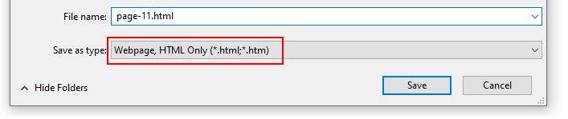
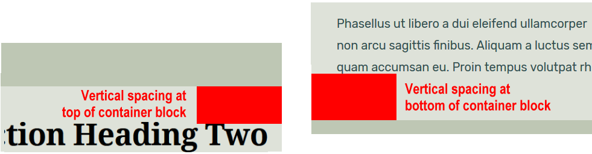
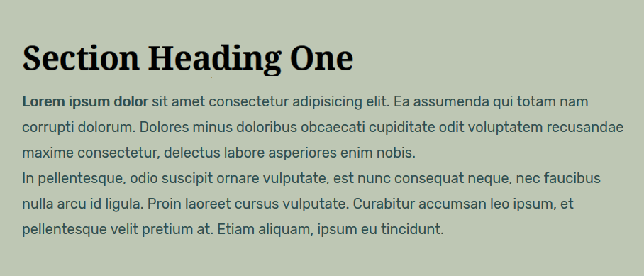
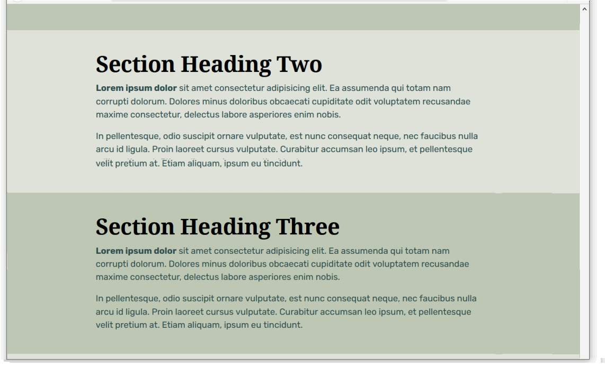
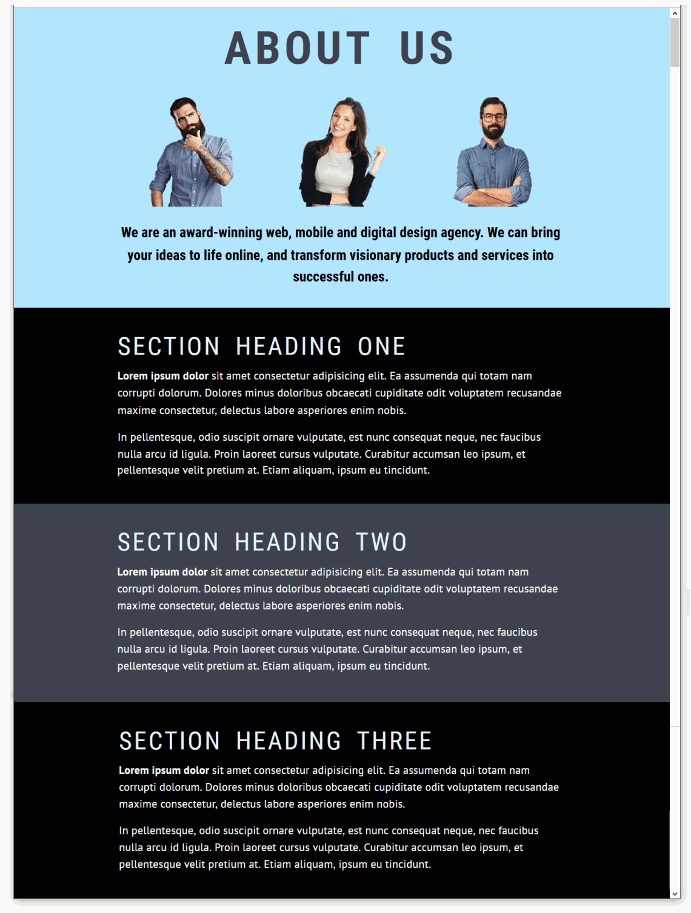
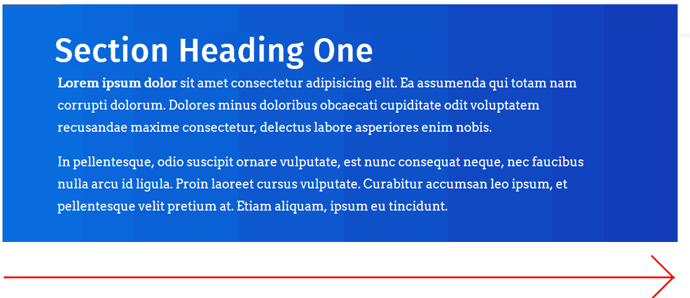

Learning Goals
At the end of this Tutorial, you will be able to:
- Create and style <div> ... </div> tags for use as vertically alternating sections in a web page.
- Apply two separate CSS classes to a section <div> ... </div>: one for basic layout and the other for visual effect.
You can view finished versions of the three sample web pages you will create in this Tutorial by clicking the links below. The finished samples will each open in a new tab of your web browser.
Downloading your sample files
Your first task is to download the three files you need for this Tutorial.
- In Google Chrome, Brave or Mozilla Firefox Developer Edition, click the following web address: page-11.html This HTML file will open in a new tab of your web browser.
- Right-click anywhere in the web page and choose View Page Source from the context menu displayed. Next, right-click anywhere on the web page source and choose Save as... (Chrome or Brave) or Save Page As... (Firefox) from the context menu displayed. Save the web page in the exercises sub-folder of your websites folder with the name page-11.html  Ensure the Save as type: dropdown list is set to Webpage, HTML only (*.HTML, *.htm). When finished, you can close the browser tab containing the page-11.html web page.
- Next, click the following web address: style-11.css This stylesheet file will open in a new tab of your web browser.
- Right-click anywhere in the browser window, and from the context menu, choose Save as... (Chrome/Brave) or Save Page As... (Firefox).

- Save the style-11.css stylesheet file in your websites/exercises/assets/css sub-folder.
- Finally, save the following image to your websites/exercises/assets/img sub-folder:
 three-staff.png
three-staff.png
Working with your sample HTML file
You are now ready to work with your downloaded sample web page and stylesheet.
- Start VS Code, and then open the following two files:
page-11.html
style-11.css - In the HTML file, you can see that the body of the web page begins with a header block with three child elements: a main <h1> heading, an <img> image and an <h2> sub-heading.

- Under the header is the main block containing a single article.
These two opening tags are closed at the end of the web page.
 The main and the article tags are included solely to ensure the web page is HTML5 compliant. These two tags are not used to style any element in the page.
The main and the article tags are included solely to ensure the web page is HTML5 compliant. These two tags are not used to style any element in the page. - Within the article is a block of content inside a section which is a parent element to three child elements: a <h1> heading and two p paragraphs.
 Note that, for each of the two parent elements of header and section, the child elements are indented in from the left edge of the VS Code screen.
Note that, for each of the two parent elements of header and section, the child elements are indented in from the left edge of the VS Code screen. - Copy-and-paste three copies of the section block within the page.
Update the text within the <h1> heading from “Section Heading One“ to “Section Heading Two“, “Section Heading Three“ and “Section Heading Four“.
Your web page should now look as shown below.
 In every case, ensure the child elements are indented from the left edge of the VS Code screen.
In every case, ensure the child elements are indented from the left edge of the VS Code screen. - Scroll up to the top of the web page.
In the head block, after the link to the style-11.css stylesheet, copy-and-paste the following new style rule that will apply to both the header and section blocks within the page.
<style> header, section { border: solid 2px red; } </style>
The head block should now look as shown below.
- When finished, save the page-11.html file and view it in your web browser. It should look as shown below.
You can view a sample of the web page as it currently looks by clicking the link below.
page-11.html (with red borders around header and section blocks)
The red border technique for visualising content blocks
The placing of a thin, red-coloured border around HTML content blocks elements is a common technique or ‘hack’ used by designers to help them view a web page’s structural layout in the web browser.
Working with your sample CSS file
Next, display the linked style-11.css stylesheet file in VS Code.
You can see that, for the following range of viewport widths, horizontal and padding values have been added fo the header and sections blocks:
- 1200px and wider (larger screens)
- 1025px to 1199px (tablets and smaller screens)
- 768px to 1024px (tablets)
- 400px to 767px (larger mobiles)
- Up to 399px (smaller mobiles)

These (sort of) standard padding spacing values should work for most if not all web pages created with the HTML5 section element.
Adding a CSS class for single-column layouts
The left and right ‘white space’ set by the padding values in the style-11.css stylesheet is fine for busy, crowded, multi-column page layouts.
For simple, single-column layouts, let's add a new class in the CSS file that adds more horizontal white space. This will apply only to wider viewport sizes.
- In VS Code, display the style-11.css file.
- For the header element, within the (min-width: 1200px) media query, copy-and-paste the following new CSS class at about line 30.
.header-narrow { padding-left: calc( (100% - 920px)/2 ); padding-right: calc( (100% - 920px)/2 ); }The result should look as follows.
- For the section element, again within the (min-width: 1200px) media query, copy-and-paste the following new CSS class at about line 98.
.section-narrow { padding-left: calc( (100% - 920px)/2 ); padding-right: calc( (100% - 920px)/2 ); }The result should look as follows.
- Next, set an 800px limit on the width of the image in the header block. To do so, update the current header img selector in the CSS file (at about line 60) by copying-and-pasting the following
/* Image in header */ header img { max-width: 800px; margin-left: auto; margin-right: auto; margin-bottom: 24px; }The left and right margin values of auto distrubute any remaining horizontal spacing equally at the left and right of the image when the image is cente-aligned. - Save your style-11.css file.
- In VS Code, switch to the page-11.html file, and add the new, narrow classes you created to the header and section blocks as shown below.
- When finished, save your page-11.html file and view it in your web browser. It should now look as shown below.
You can view a sample of the web page as it curently looks by clicking the link below.
page-11.html (with red borders around header and section blocks)
Styling your content blocks
In the next few steps, you will add some new classes to create different background styles for your web page.
- At the bottom of your style-11.css stylesheet, copy-and-paste these following three new selectors and style rules. Each selector does only one job: it adds a background colour.
/* Coloured backgrounds */ .bg-hero-block { background-color: #f5f9fb } .bg-pastel-1 { background-color: #BEC7B4 } .bg-pastel-2 { background-color: #DEE2D9 } }
- You can now delete the ‘red box’ style rule from your .section declaration block.
A better option is to wrap it inside comment tags, just in case you want to reuse this visual guide again later.

- When finished, save your 1.css stylesheet file.
- Switch to your page-10.html web page, and add the following classes to the section <div> tags.
 Each of your content container blocks now has two classes that control its appearance:
Each of your content container blocks now has two classes that control its appearance:
- A section class that controls the spacing around it, and
- And a second class such as bg-pastel-2 that controls only the colour of its background – and nothing else.

- Save your page-10.html web page and view it in your web browser. It should now look as shown below.

Controlling the vertical spacing between container blocks
One problem remains with your web page: there is more vertical spacing below the content of your container blocks than above them.
This does not look right
A more professional and visually pleasing web page would have equal vertical spacing at the top and the bottom of the content within the container blocks. See below.

The extra vertical spacing at the bottom of your section <div> elements is the result of the margin-bottom value of the <p> paragraph tag.
margin-bottom: 20px;
You could delete this CSS style rule from the p paragraph styles. Then your paragraphs would have a margin-bottom value of zero, as set out in the web browser resets at the top of your stylesheet file.
Unfortunately, there would be no vertical spacing between <p> paragraphs of text within your container blocks. See below.
A more correct solution is as follows:
- In your style-11.css stylesheet, after the end of the .section p declaration block, copy-and-paste the following new style.
/* Last paragraph at bottom of container block */ .section p:last-child { margin-bottom: 0 }
This new style applies only to the final paragraph within a section. No other paragraphs of text will be affected. - But what if the last item of content inside a section is not a paragraph, but something else? Such as an image, button, video or whatever?
The ideal solution is to use the 'wildcard' asterisk * character as follows.
/* Last content item at bottom of container block */ .section *:last-child { margin-bottom: 0 }
- Save your stylesheet and view your page-11.html web page in your browser. The container blocks and the content inside them should now look as shown below. 
Click page-11.html to view a finished sample of this web page in a new tab of your web browser.
Working with your second sample web page
To begin this second sample exercise, open these two files in VS Code:
- The web page named page-11.html
- The stylesheet named style-11.css
Next, follow the steps below:
- Use the File | Save As command to save the two files with these new file names:
page-12.html
style-12.css - In the <head> of your new page-11.html file, copy-and-paste the following to replace the title and description tags:
<title>HTML5 Sample Web Page: Sections with altenating dark background colours.</title> <meta name="description" content="Using HTML5 section tags to create a web page with alterating dark coloured blocks of content.">
- Also in the <head>, change the stylesheet link as follows:
<link rel="stylesheet" href="style-12.css">
- And finally in <head>, replace the Google Fonts code with the relevant code for the following two new fonts:
Roboto Condensed normal
Roboto Condensed normal italic
Roboto Condensed 700
Roboto Condensed 700 italic - When finished, save your page-11.html file.
Next, let’s perform some style updates in the stylesheet file, style-11.css.
- To change the fonts, replace the values of the font-family property of your main heading, sub-headings and text paragraphs as follows:

font-family: 'Roboto Condensed', sans-serif;

font-family: 'Roboto Condensed', sans-serif;

font-family: 'Roboto Condensed', sans-serif;

font-family: 'PT Sans', sans-serif; - To change the font colours, replace the values of the color property of your main heading, sub-headings and text paragraphs as follows.
color: #3e414f;
color: #000000;
color: #e1f5fe;
color: #fff; - To change the spacing between letters within your headings and sub-headings:
- For your <h1> heading, update the letter-spacing value as follows.
letter-spacing: 8px; - For your <h3> heading sub-heading, update the letter-spacing value as follows.
letter-spacing: 4px;
- For your <h1> heading, update the letter-spacing value as follows.
- To change the capitalisation of your headings and sub-headings, add the following new text-transform properties and values.
- For your <h1> heading, add this text-transform rule.
text-transform: uppercase; - For your <h3> sub-heading, add this text-transform rule.
text-transform: uppercase;
- For your <h1> heading, add this text-transform rule.
- Next, change the names and the background-color values of the two CSS declarations that control the visual appearance of the alternating blocks of content.
/* Coloured backgrounds */ .bg-dark-1 { background-color: #000000 } .bg-dark-2 { background-color: #3e414f }
You do not need to change the class name or the background-color value of the .bg-hero declaration. - When finished, save your style-11.css stylesheet.
- Switch to your page-11.html web page, and update the classes to match the class names in your stylesheet.
- Rename the bg-pastel-1 class to bg-dark-1, and
- Rename the bg-pastel-2 class to bg-dark-2
- When finished, save your web page. It should now look as shown below. 
Click page-11.html to view a finished sample of this web page in a new tab of your web browser.
Working with your third sample web page
To begin the third sample exercise, open these two files in VS Code:
- The web page named page-12.html
- The stylesheet named style-12.css
Next, follow the steps below:
- Use the File | Save As command to save the two files with these new file names:
page-13.html
style-13.css - In the <head> of your new page-12.html file, copy-and-paste the following to replace the title and description tags:
<title>HTML5 Sample Web Page: Sections with altenating light and dakrk backgrounds.</title> <meta name="description" content="Using HTML5 section tags to create a web page with alterating light and dark coloured backgrounds.">
- Also in the <head>, change the stylesheet link as follows:
<link rel="stylesheet" href="style-13.css">
- And finally in <head>, replace the Google Fonts code with the relevant code for the following two new fonts:
Fira Sans normal
Fira Sans normal italic
Arvo 700
Arvo 700 italic - When finished, save your page-12.html file.
Next, let’s perform some style updates in the stylesheet file, style-12.css.
- To change the fonts, replace the values of the font-family property of your main heading, sub-headings and text paragraphs as follows:
font-family: 'Fira Sans', sans-serif;
font-family: 'Fira Sans', sans-serif;
font-family: 'Fira Sans', sans-serif;
font-family: 'Arvo', sans-serif; - To change the font colours, replace the values of the color property of your main heading, sub-headings and text paragraphs as follows.
color: #1435b3;
color: #696969;
color: #000;
color: #2F4F4F; - To change the spacing between letters wuthin your headings and sub-headings:
- For your <h1> heading, update the letter-spacing value as follows.
letter-spacing: -3px; - For your <h3> sub-heading, update the letter-spacing value as follows.
letter-spacing: -3px;
- For your <h1> heading, update the letter-spacing value as follows.
- To change the capitalisation of your headings, remove any text-transform properties and values from the style-12.css stylesheet.
- Next, change the names and the background-color values of the two CSS declarations that control the visual appearance of the alternating blocks of content.
/* Coloured backgrounds */ .bg-blue-light { background-color: #d8f0f5 } .bg-blue-dark { background-color: #1435b3 }
You do not need to change the class name or the background-color value of the .bg-hero declaration. - When finished, save your style-12.css stylesheet.
- Switch to your page-12.html web page, and update the classes to match the class names in your stylesheet.
- Rename the bg-dark-1 class to bg-blue-dark, and
- Rename the bg-dark-2 class to bg-blue-light
- When finished, save your web page. It should now look as shown below.

Alternating font colours between container blocks
We still have some more work to do with this third sample web page and stylesheet.
- For the section divs with a dark blue background, we would like both the sub-headings and text paragraphs to display in a light blue colour.
- For the section divs with a light blue background, we would like the sub-headings to display in a dark blue, and the text paragraphs in a dark colour closer to black.

Follow these steps:
- In the style-12.css stylesheet, add the following new lines at the bottom of the file.
/* Light blue background: h3 sub-headings and p text paragraphs */ .section.bg-blue-light h3 { color: #1435b3 } .section.bg-blue-light p { color: #000 } /* Dark blue background: h3 sub-headings and p text paragraphs */ .section.bg-blue-dark h3 { color: #fff } .section.bg-blue-dark p { color: #fff }
By ‘joining’ the two class selectors of section and .bg-blue-dark together without any empty space between them, you are telling the web browser: only apply the h3 or p style rules that follow when the container <div> block in the web page has both classes. Similarly, the h3 or p style rules that follow the .section.bg-blue-light combination will apply only to container <div> blocks in the web page that have both these classes.
- When finished, save your style-12.css stylesheet and view the page-12.html web page in your browser.
All done.
Using a linear colour gradient as a background
In all three sample web pages above you have applied what are called solid background colours to your container <div> blocks, using the background-color style property.
CSS also offers a property called background-image that enables you to apply linear gradients to <div> blocks and other web page elements.
Linear-gradients are of two main types:
- Gradients of the same colour. For example, from a light blue to a dark blue.
- Gradients of different colours. For example, from blue to green.
Let’s apply a linear gradient background to our third sample web page.
- In VS Code, open your style-12.css stylesheet.
- Near the bottom of the file, you can see the following selector and style rule.
.bg-blue-dark { background-color: #1435b3 }
- Replace this by copying-and-pasting the following.
/* Default gradient direction: top to bottom */ .bg-blue-dark { background-image: linear-gradient(#0575e6, #1435b3) }
- Save your stylesheet and view your page-12.html web page in your browser.
You can see that the dark blue background subtly changes from lighter to darker, in the direction from top to bottom.

- You can change the default (top-to-bottom) direction of a linear gradient by adding a direction setting within the property value.
For example, linear gradients more commonly change from left to right.
Under the linear gradient you added earlier, copy-and-paste this new left-to-right gradient. It has the same two colours. But because of the extra 90deg setting, the direction is different.
/* Gradient direction: left to right */ .bg-blue-dark { background-image: linear-gradient(90deg, #0575e6, #1435b3) }
- Save your stylesheet and view your page-12.html web page in your browser. You can see that the dark blue background changes from left to right. 
Click page-12.html to view a finished sample of this web page in a new tab of your web browser.
Here are some more examples of linear gradients for you to experiment with in your web pages.
/* Green */ background-image: linear-gradient(90deg,#02727e,#06b294);
/* Bronze */ background-image: linear-gradient(90deg,#6b2d38,#cd6065);
/* Purple to orange - modern */ background-image: linear-gradient(90deg,#e052a0,#f15c42);
/* Purple (AIB Bank) */ background-image: linear-gradient(90deg,#802b7b,#de0a85);
/* Blue (Disney Channel ad) */ background-image: linear-gradient(90deg,#07092f,#165cc0);
/* Yellow to blue - tangy! */ background-image: linear-gradient(90deg,#b8ea0a,#50c8f7);
Updating the content of your home page
Now that you have created and styled three new sample web pages, you need to add new hyperlinks to the home page of your web site.
- In VS Code, open this HTML file in your websites folder:
index.html
Its content should look as follows:

- Copy-and-paste the following three new lines to your web page, directly under the line that contains the link to the page-9.html web page.
<p><a href="page-10.html">Web Page with Pastel Sections</a></p> <p><a href="page-11.html">Web Page with Dark Sections</a></p> <p><a href="page-12.html">Web Page with Alternating Sections</a></p>
Save your index.html web page and view the result in your browser.
Updating your home page content
Follow the steps below:
- In Visual Studio Code, open this HTML file in your websites folder: index.html
- Copy-and-paste the following new line to your web page, directly under the line that contains the link to the page-10.html web page.
<p><a href="exercises/page-10.html">Web Page With Panels</a></p>
Save your index.html web page and view the result in your browser.
Uploading your files to GitHub
After finishing your web page and stylesheet, you are now ready to upload them to your account on GitHub.
- Open a new tab in your web browser and go to GitHub.com. If you are not already signed in to your GitHub account, sign in now.

- On your GitHub home page, click the ‘repo’ that holds your web pages. Its name will look as follows, where username is your chosen username on GitHub.
username.github.io

- On the next GitHub screen displayed, near the right of the screen, you can see a button named Add file. Click on it.

- From the dropdown list displayed, choose the option Upload files.

- In File Explorer (Windows 10) or Finder (Apple Mac), drag-and-drop your index.html file and your 📁 exercises sub-folder to upload them to your repository on GitHub.

- Scroll down to the bottom of the GitHub screen, and accept or edit the short message (Add files via upload) in the Commit changes box.
- Finally, click the green Commit changes button to upload your files.

Your updated home page and four sample pages are now published on GitHub at web addresses similar to the following:
https://username.github.io/index.html
https://username.github.io/exercises/page-10.html
It may take a few minutes for your uploaded files to appear on GitHub.